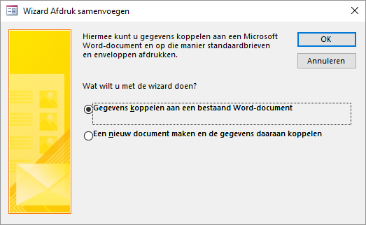
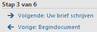
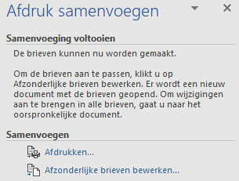
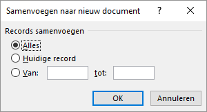

Taak: Mailmerge
Vanuit Access wordt de Wizard Afdruk samenvoegen gestart om een standaardbrief in Word te maken met een adressenbestand in Access.
In deze taak wordt aan klanten een standaardbrief gestuurd met daarin de aankondiging van een nieuwe bonbondoos met de naam “Sneeuwwitje”. Als bron voor de adressen wordt de tabel Klanten gebruikt.
- Open de database snoep2016.accdb.
- Selecteer de tabel Klanten.
-
Geef een rechter muisklik op de tabelnaam en kies Exporteren > Word Merge.
Figuur: Wizard Afdruk samenvoegen  - Selecteer Gegevens koppelen aan een bestaand Word document en klik op OK.
-
Selecteer in het dialoogvenster Microsoft Word-document
selecteren het hulpbestand Sneeuwwitje.docx
en klik op Openen.
Microsoft Word wordt opgestart en verschijnt met het document. Op het lint is de tab Verzendlijsten geactiveerd en aan de rechterkant is het paneel Afdruk samenvoegen verschenen. Onder in dit paneel is te zien dat de Wizard zich in stap 3 van de 6 zit.
Figuur: Voortgang wizard samenvoegen: stap 3 van 6  - Klik op de link Volgende: Uw brief schrijven.
- Plaats de cursor in de eerste regel, kies dan tab Verzendlijsten > Samenvoegvelden invoegen (groep Velden beschrijven en invoegen) > Voornaam.
-
Voeg daarna de velden Achternaam, Straat, Postcode en Plaats zoals in het model
hierna te zien is.
<<Voornaam>> <<Achternaam>> <<Straat>> <<Postcode>> <<Plaats>> -
Klik in het paneel Afdruk samenvoegen onder
Stap 4 van 6 op de link Volgende:
Briefvoorbeeld.
Een voorbeeldbrief voor de eerste klant wordt getoond.
-
Klik in het paneel Afdruk samenvoegen onder
Stap 5 van 6 op de link Volgende:
Samenvoeging voltooien.
In het paneel Afdruk Samenvoegen kan nu de samenvoeging afgerond worden.
Figuur: Voltooing van de samenvoeging Je hebt nu twee keuzes:- Met Afdrukken stuur je de brieven naar de printer.
- Met Afzonderlijke brieven bewerken wordt er één Word document gemaakt.
-
Klik op de link Afzonderlijke brieven bewerken.
Figuur: Selectie van records  -
Geef aan dat je voor de eerste 10 klanten de de standaardbrief wilt maken en
klik dan op OK.
Er wordt een nieuw Word-document gemaakt met daarin 10 brieven.
- Bewaar het document onder de naam Uitnodiging nieuwe doos en sluit daarna Word af.